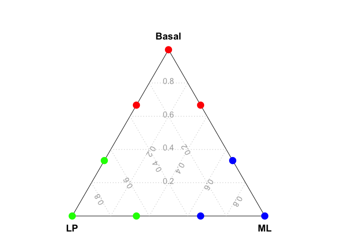
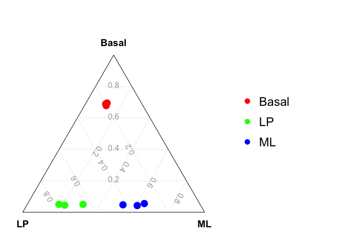
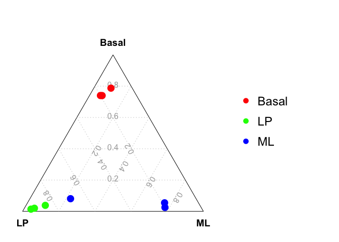

The goal of scTernary is to perform ternary plot analysis for single cell RNA-seq data.
The scTernary package can be installed from GitHub by using:
devtools::install_github("jinming-cheng/scTernary")This is a basic example of drawing a ternary plot.
library(scTernary)
data_for_ternary = data.frame(Basal = c(1,2,2,0,0,1,0,1,0),
ML = c(0,1,0,1,2,2,0,0,1),
LP = c(0,0,1,0,1,0,1,2,2) )
vcdTernaryPlot(data = data_for_ternary,
group = rep(c("Bas","ML","LP"),each=3),
group_levels = c("Bas","LP","ML"),
group_color = c("red","green","blue"),
point_size = 1,
legend_point_size = 0.6)
The ternary plot analysis using a constant cut-off can be applied to single cell RNA-seq data with raw count cut-off of 0. Here, we use a small bulk RNA-seq dataset to show the ternary plot analysis with a CPM cut-off of 100. The ternary plot analysis for Fluidigm C1 data is similar to that for bulk RNA-seq data.
Example bulk RNA-seq data (using CPM)
cpm = edgeR::cpm(example_dge_data$counts)Three samples for each group
example_dge_data$samples$group
#> [1] LP ML Basal Basal ML LP Basal ML LP
#> Levels: Basal LP MLGenerate data for ternary plot usng a CPM cut-off of 100
data_for_ternary = generate_data_for_ternary(
data_exp_mat = cpm,
anno_signature_genes = anno_signature_genes_mouse,
gene_name_col = "GeneID",
gene_type_col = "gene_type",
weight_by_gene_count = TRUE,
cutoff_exp = 100,
prior_count = 2
)
head(data_for_ternary)
#> Basal LP ML
#> 10_6_5_11 0.02244898 0.34579439 0.07750473
#> 9_6_5_11 0.02040816 0.16822430 0.29300567
#> purep53 0.21020408 0.06074766 0.03402647
#> JMS8-2 0.21496599 0.05841121 0.03591682
#> JMS8-3 0.02380952 0.21495327 0.26654064
#> JMS8-4 0.02040816 0.33878505 0.09451796Drawing the ternary plot
vcdTernaryPlot(data = data_for_ternary,
order_colnames = c(2,3,1),
group = example_dge_data$samples$group,
group_color = c("red","green","blue"),
point_size = 1,
show_legend = TRUE,
legend_point_size = 0.6,
legend_position = c(0.3,0.5),
scale_legend = 1)
We can also find the optimized cut-off for each sample (or cell) to calculate the signature gene proportion for the sample (or cell). The optimized cut-off is estimated by maximizing the coefficient of variation (CV) of the signature gene proportion by a grid search method.
Example bulk RNA-seq data (using logCPM)
lcpm = edgeR::cpm(example_dge_data$counts,log = TRUE)Three samples for each group
example_dge_data$samples$group
#> [1] LP ML Basal Basal ML LP Basal ML LP
#> Levels: Basal LP MLEstimate a optimized cut-off for each sample (or cell)
estimated_cutoffs = estimate_optimized_cutoffs(
data_exp_mat = lcpm,
anno_signature_genes = anno_signature_genes_mouse,
gene_name_col = "GeneID",
gene_type_col = "gene_type",
weight_by_gene_count = TRUE,
prior_count = 2,
do_parallel = TRUE,
n_cores = 2
)Generate data for ternary plot
data_for_ternary = generate_data_for_ternary(
data_exp_mat = lcpm,
anno_signature_genes = anno_signature_genes_mouse,
gene_name_col = "GeneID",
gene_type_col = "gene_type",
weight_by_gene_count = TRUE,
cutoff_exp = estimated_cutoffs,
prior_count = 2
)
head(data_for_ternary)
#> Basal LP ML
#> 10_6_5_11 0.001360544 0.091121495 0.003780718
#> 9_6_5_11 0.001360544 0.004672897 0.018903592
#> purep53 0.100000000 0.025700935 0.009451796
#> JMS8-2 0.031292517 0.004672897 0.003780718
#> JMS8-3 0.001360544 0.011682243 0.003780718
#> JMS8-4 0.001360544 0.063084112 0.003780718Drawing the ternary plot
vcdTernaryPlot(data = data_for_ternary,
order_colnames = c(2,3,1),
group = example_dge_data$samples$group,
group_color = c("red","green","blue"),
point_size = 1,
show_legend = TRUE,
legend_point_size = 0.6,
legend_position = c(0.3,0.5),
scale_legend = 1)